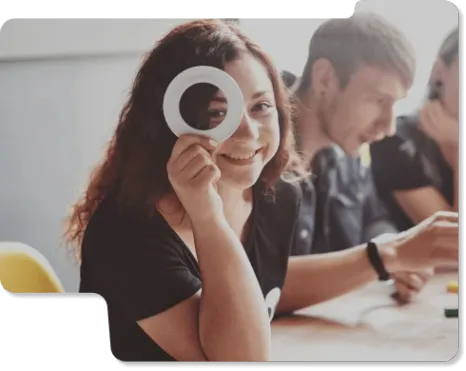
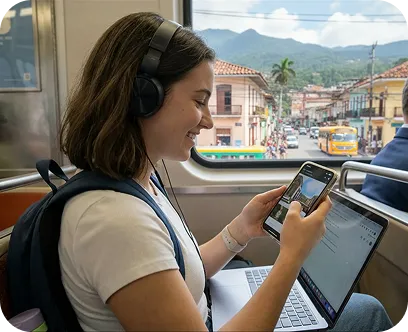
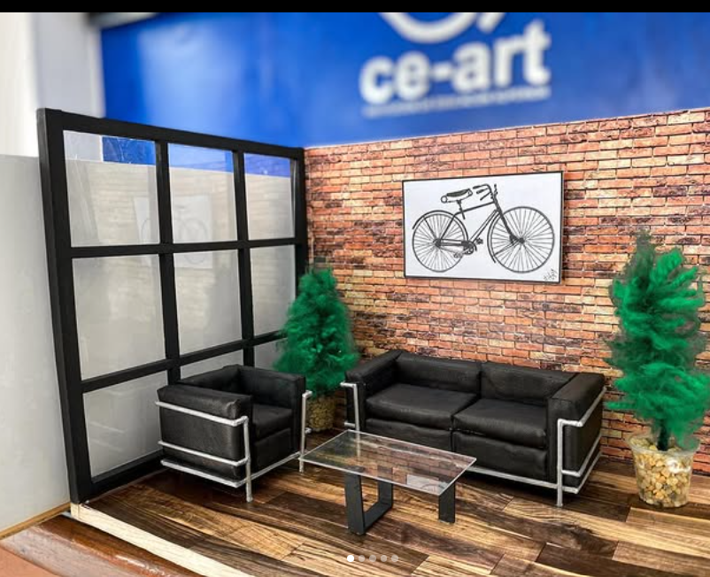

Explora programas académicos y construye tu futuro profesional
Este programa forma profesionales capaces de crear, gestionar y optimizar estrategias de publicidad digital, integrando creatividad, análisis de datos y herramientas tecnológicas. Los estudiantes desarrollan habilidades para conectar marcas con audiencias, generar contenido de impacto y tomar decisiones basadas en información real del entorno digital.
No es solo aprender publicidad… es crear ideas que conectan, comunicar con estrategia y generar impacto en el mundo digital.
Aquí desarrollas habilidades reales para construir tu futuro profesional.
La Corporación de Educación Superior CE-ART tiene como misión contribuir al desarrollo de la sociedad mediante procesos de formación técnica de alta calidad, integrando conocimiento, investigación y proyección social en los ámbitos artísticos, humanísticos y tecnológicos.

Institucional
Institución de Educación Superior
Sedes